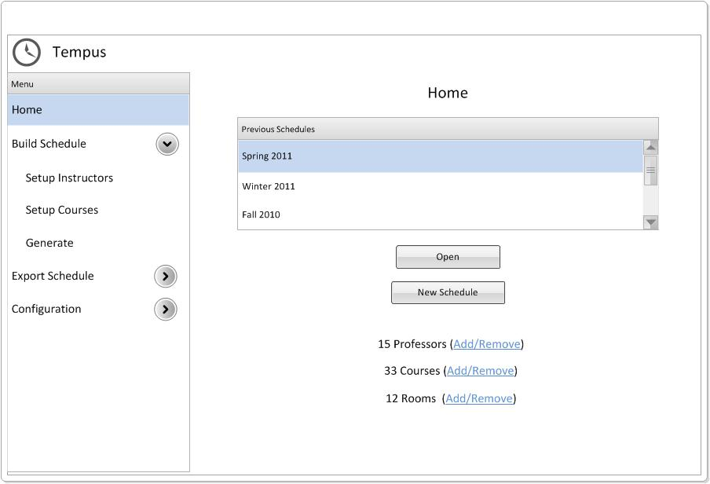
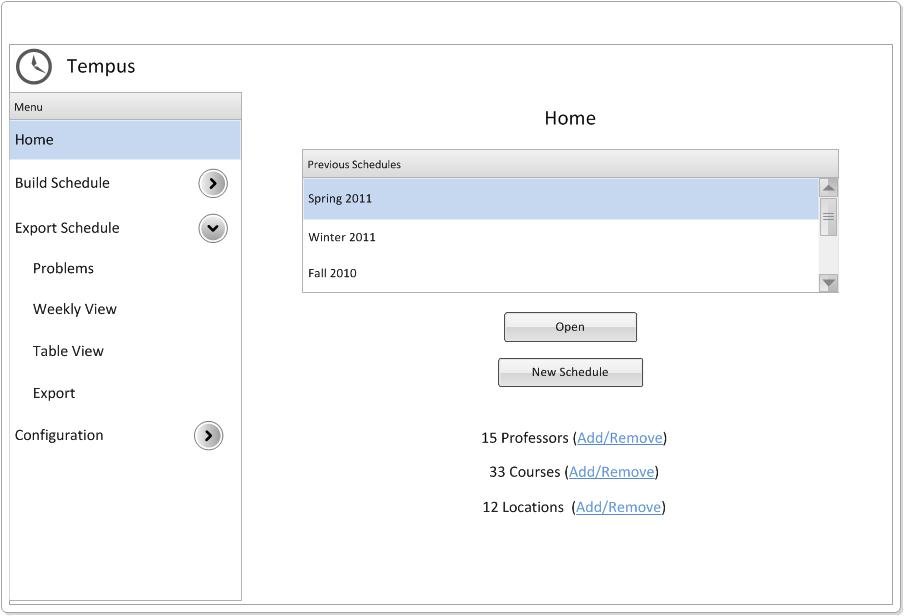
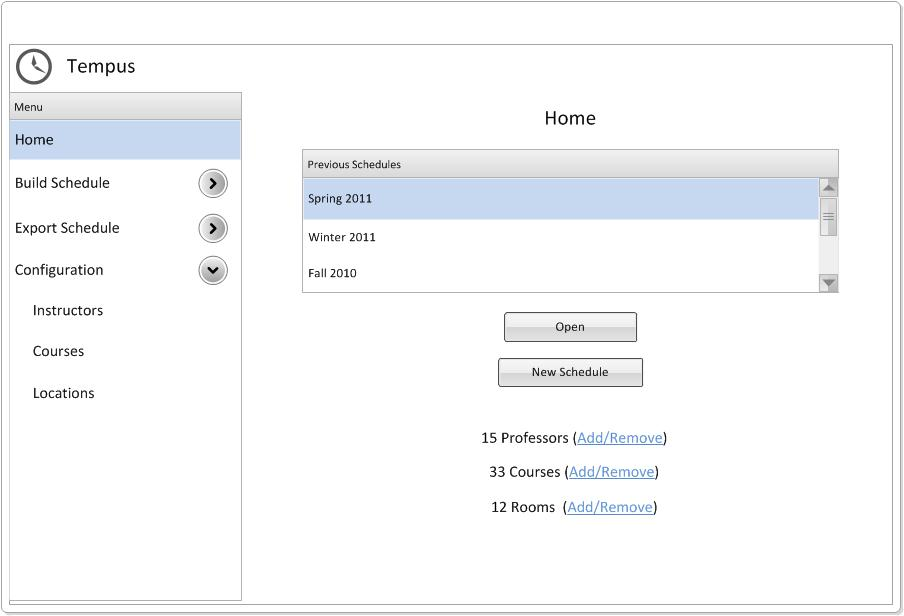

When a user first launches the Scheduler, the Scheduler will display the Login page as shown above. The user will have to input their username and password to access the Scheduler.

After the user inputs a valid username and password on the Login page, the Scheduler will present the user with the Home page as shown above. The page contains a list of previously created schedules. The user can select one and click the 'Open' button to use the selected schedule as a starting template. There is also a 'New Schedule' button that will allow the user to start building a new schedule from scratch. At the bottom, the Home page shows how many instructors, courses, and locations are currently in the Scheduler's database. The user can click the corresponding 'Add/Remove' button next to each of these counts to modify the collection of instructors, courses, or locations.
On the left side of the Home page is the main menu. This menu will appear in the left column on every page of the Scheduler. When the user moves their mouse over any of the three menu items with an arrow buttons next to them (i.e. 'Build Schedule', 'Export Schedule', or 'Configuration'), the menu will expand a sub menu. These menus are shown below. The Scheduler will only show one expanded sub menu at a time, so when one sub menu expands, any other expanded submenus will concurrently collapse.


